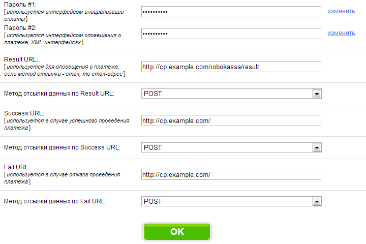

Установка LitePanel
Панель управления устанавливается в 2 этапа:
Установка веб-части
Для работы веб-части требуются:
- Apache 2 с модулем mod_rewrite
- MySQL Server 5+
- PHP 5.3+ с модулями php_mysql, php_gd, php_ssh2
Для удобной работы с базой данных рекомендуем использовать phpMyAdmin.
- Загрузите архив с веб-частью.
- Распакуйте архив в корневую папку веб-сервера. Обратите внимание на то, что веб-часть ПУ должна находится в корне (под)домена.
Обратите внимание на то, что панель управления должна располагаться в корне домена или поддомена. То есть: example.com, cp.example.com, panel.example.com - правильно; example.com/panel - неправильно.
- Создайте пользователя и базу данных в СУБД MySQL.
- Импортируйте содержимое базы данных из файла dump.sql.
- Переименуйте файл конфигурации "application/config.default.php" в "application/config.php".
- Заполните файл конфигурации "application/config.php".
- Зарегистрируйте аккаунт в LitePanel. Для установки прав администратора измените параметр "user_accesslevel" в таблице "users".
Для удаления неоплаченых серверов, сбора статистики и т.д. необходимо добавить в cron запуск следующих скриптов:
| URL |
Рекомендуемый период |
| http://example.com/main/cron/index?token=[TOKEN] |
1 раз в сутки |
| http://example.com/main/cron/updateSystemLoad?token=[TOKEN] |
1 раз в 5 минут |
| http://example.com/main/cron/updateStats?token=[TOKEN] |
1 раз в час |
| [TOKEN] - токен, указанный в файле конфигурации веб-части (application/config.php). |
Установка серверной части
Для работы серверной части требуются:
- Debian 6+
- SSH2 Server (Для установки:
apt-get install openssh-server)
- Python 3 (Для установки:
apt-get install python3)
- Screen (Для установки:
apt-get install screen)
Для стабильной работы игровых серверов на 64-битных системах рекомендуется установить 32-битные библиотеки (Для установки:
apt-get install ia32-libs).
- Загрузите архив с серверной частью.
- Распакуйте архив в папку "/home".
- На папку "/home/cp" установите права доступа 700. (Для установки:
chmod 700 /home/cp)
- На файл "/home/cp/gameservers.py" установите права доступа 700. (Для установки:
chmod 700 /home/cp/gameservers.py)
- Добавьте группу "gameservers" (Для добавления:
groupadd gameservers)
Добавление игр
Игры добавляются в 3 этапа:
Сборка игрового сервера
После создания файла конфигурации нам необходимо загрузить сам игровой сервер и отредактировать его файлы конфигурации. В качестве примера возьмем файл конфигурации сервера San Andreas Multiplayer:
echo Executing Server Config...
lanmode 0
rcon_password changeme
maxplayers 50
port 7777
hostname SA-MP 0.3 Server
gamemode0 grandlarc 1
filterscripts base gl_actions gl_property gl_realtime
announce 0
query 1
weburl www.sa-mp.com
maxnpc 0
onfoot_rate 40
incar_rate 40
weapon_rate 40
stream_distance 300.0
stream_rate 1000
В данном случае нам нужно добавить параметр
bind (параметр отвечает за используемый IP адрес) и изменить параметр
password (сервер с паролем "changeme" не запустится). Значение параметров, отвечающих за кол-во слотов, порты и IP адреса, значение не имеет - при запуске сервера им присвоится необходимое значение.
echo Executing Server Config...
lanmode 0
rcon_password 123456
maxplayers 0
bind 0.0.0.0
port 0
hostname SA-MP 0.3 Server
gamemode0 grandlarc 1
filterscripts base gl_actions gl_property gl_realtime
announce 0
query 1
weburl www.sa-mp.com
maxnpc 0
onfoot_rate 40
incar_rate 40
weapon_rate 40
stream_distance 300.0
stream_rate 1000
Упаковка игрового сервера
После завершения сборки сервера содержимое сервера необходимо упаковать в архив tar. Для упаковки используйте команду tar cf samp.tar /папка/*. После упаковки содержимого сервера в архив необходимо поместить архив в папку "/home/cp/gameservers/files/".
Настройка платежной системы ROBOKASSA
Прием платежей настраивается в 2 этапа:
Настройка ROBOKASSA
- Зайдите в личный кабинет ROBOKASSA.
- Перейдите во вкладку “Администрирование”.
- Заполните поля так, как это сделано на картинке ниже. “http://cp.example.com/” замените на адрес панели управления, он должен совпадать с URL, указанным во вкладке “Регистрационные данные” в поле “Адрес главной страницы вашего сайта”.
- В поля Пароль #1 и Пароль #2 введите два надежных пароля.

Настройка LitePanel
В файле конфигурации “/application/config.php” значения следующих параметров:
- rk_login – Логин в системе ROBOKASSA
- rk_password1 – Пароль #1 указанный при настройке ROBOKASSA
- rk_password2 – Пароль #2 указанный при настройке ROBOKASSA
Документацию по работе основного сервера ROBOKASSA можете узнать
здесь, а документацию по тестовому серверу
здесь.